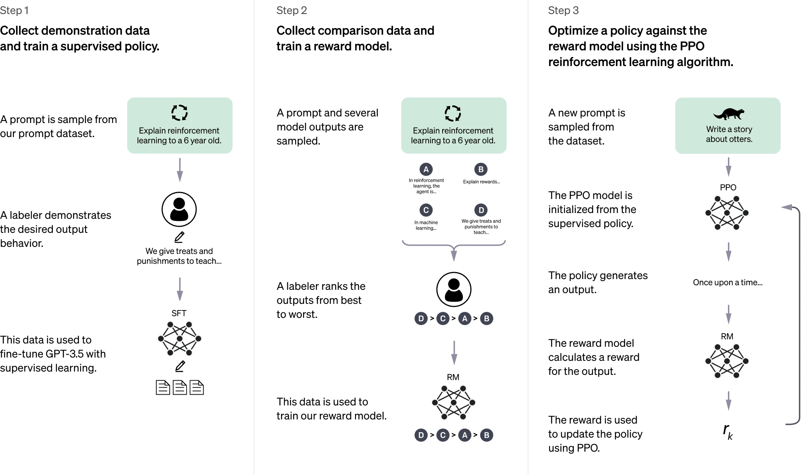
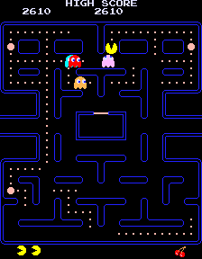

Related Interests
Image and Video Edits
In my free time, I make image and video edits using editing software. Using creativity and multiple different editing tools, I can create a seemingly all-new image from an exisitng one. I have created images for the purpose of satire, comedy, and more.
Video Games
Since programmers develop games, having an interest in video games makes sense. I have played them for as long as I can remember, and have learned patience, problem solving, strategy, and accuracy from them. Games like Minecraft and Roblox have made me familiar with very basic programming.
AI Usage
Since AI is becoming more common in every job field, it only makes sense to have an interest in it. Using AI, I can get help when I am stumped with a problem or forget the right syntax to use when coding. I have used it to help myself come up with ideas or to take my ideas and create something new with them.
Takeaway
Using these skills, I hope to be able to develop simple arcade-style games like Pac-Man or Super Mario. I hope to be able to program in multiple languages and be able to easily learn new ones (by looking at similarities between others).